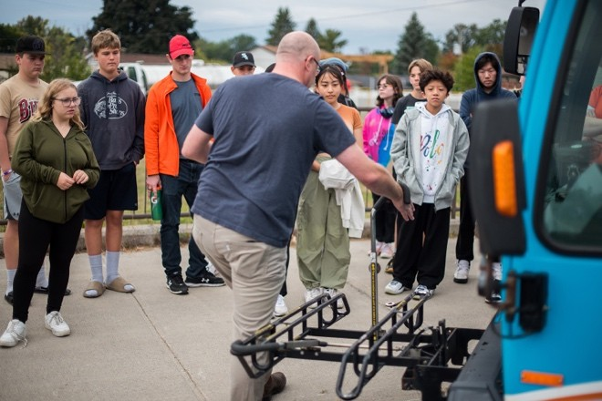
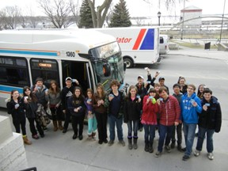
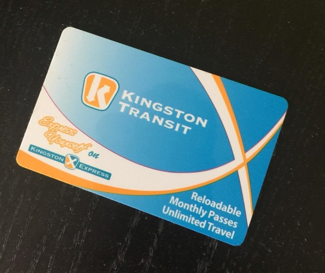
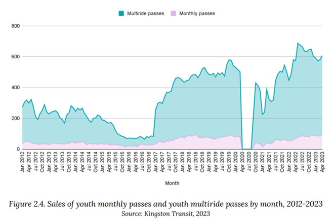

Kingston’s High School Transit Pass Program is an exceptionally well evaluated program that provides high school students with training on and free passes for riding the bus, with the aim of instilling a lifelong habit of using public transit. It helped increase total bus ridership by 70% over six years. The approach illustrates the value of focusing on a time when habit formation occurs.
Note: To minimize site maintenance costs, all case studies on this site are written in the past tense, even if they are ongoing as is the case with this particular program.
In the city of Kingston, Canada, 33% of greenhouse gas emissions came from transportation, and 71% of commuters drove to work alone. Promoting transit use in place of driving a car was identified as a promising way to cut emissions. Dan Hendry convinced his colleagues at the Limestone District School Board and City of Kingston that if they could get more high school students using transit rather than being driven by their parents in a car, there would be an immediate reduction in emissions. There could also be a longer-term impact if the students continued as regular, committed transit passengers after their passes expired at the end of grade nine.
The program built upon the "Kingston Gets Active Pass," a partnership between municipal, education, health, social and recreation sectors in Kingston to boost students’ physical activity by increasing their access to and participation in the programs run by local community recreation facilities. A lack of transportation options had been identified as a key barrier to using the facilities.
The Pass program, which gave students free transit rides to and from designated recreation facilities was originally designed for grade five students. Since physical education was not mandatory after grade nine, the pass was then tried with grade 10. This was then switched to grade nine so that physical education teachers could promote participation among their students. Grade nine students were also prioritized because they were at an age when they were establishing new habits, they were not yet able to get a driver’s license, and physical activity levels had been dropping as children moved into high school.
However, in the 2011-2012 school year, there were only 200-300 uses of the grade nine activity pass by the region’s 2,500 grade nine students. Recreation Services staff proposed making the free passes more appealing by expanding the program to cover all transit trips taken by the grade nine students during the school year. Because the pass program was already in place, the expansion did not require additional city resources.
Kingston’s High School Transit Pass Program pilot tested its approach over four years, gradually expanding the program from grade nine to eventually include all high school grades.
Based on this experience, organizers identified the following key barriers and motivators for students.
Barriers
Motivators
This case study covers the use of this approach with high school students.
When launching the program, the immediate goal was to increase grade nine use of the activity pass by removing transportation barriers. However, this was inspired by the intention of decreasing long-term transportation-related emissions by encouraging use of public transit instead of personal automobiles. Other communities that have replicated Kingston’s initiative have been able to establish more detailed goals pertaining to program involvement and environmental outcomes.
Dan Hendry, in his role at Limestone District School Board, worked with Jeremy DaCosta at Kingston Transit to pioneer the Kingston High School Bus Pass Program. Jeremy DaCosta was the Director of Transit Services at the City of Kingston.
In addition to offering free transit to students during the school year, Kingston’s High School Transit Pass Program provided students with training on and experience with using the transit system, building their confidence and skills. For example, grade nine students were shown how to load their bicycles onto the busses’ bike racks and taken for a mini trip on a chartered city bus. (Building Motivation, Engagement and Habits Over Time; Financial Incentives; Overcoming Specific Barriers; Vivid, Personalized, Credible, Empowering Communication)

Photo courtesy of Garret Elliott and Dan Hendry.
Concurrently, Kingston increased bus service from 158,000 to 236,000 service hours a year. Over time, it also expanded the program to include the public school boards, French school boards, Catholic school boards, private schools, and homeschool students.
First Pilot Year with Grade Nine Students (2012-2013 School Year)
The program was first piloted in the 2012-2013 school year with grade nine students.
Participating students had to get their free bus cards from either City Hall or the Cataraqui Centre. They were required to show either:
At the end of the school year, 648 grade nine transit passes had been issued, resulting in over 28,000 bus trips. The bulk of these trips (85%) were to get to and from school (on weekdays between 7am-9am and 2pm-4pm.) Based on the pilot’s results, city staff and the local school boards decided to continue the program for another year and expand it to include grade 10 students.

Photo courtesy of Clean50.
Second Pilot Year with Grades Nine and Ten (2013-2014 School Year)
In the second pilot year (2013-2014), grade nine students could get their free passes at their schools (Overcoming Specific Barriers). Grade ten students who could receive the free transit pass the previous year were able to go to City Hall or the Cataraqui Centre to renew their passes for the year or receive their first one. Transit passes could also be replaced for $3 if needed.
In addition to getting the free passes, with financial support from the United Way, the students got in-school training on and experience with riding a bus. (Vivid, Personalized, Credible, Empowering Communication)
That school year, 869 grade nine students and 630 grade ten students got passes. Ridership by students in grades nine and ten grew by 176% to 63,606 trips. Only 61% of these trips were concentrated around the start and end of the school day.

Photo courtesy of Cris Vilela/ The Kingstonist
Fourth Pilot Year with Grades Nine to Twelve (2015-2016 School Year)
By the 2015-2016 school year, the program covered all grades from nine to twelve, driving ridership to 600,000 annually.
Further Growth
The following table summarizes the key barriers to action and how each was addressed.
|
Barrier |
How it was addressed |
|
· Little direct experience taking transit. No one was teaching the students how to use it: how to get on and off, how to load a bike on the bike rack, etc. · Cost to take transit · Inertia |
· Provided students with training on, and experience with, using the transit system, building their confidence and skills. · Free transit passes · The program was promoted through the schools. It engaged people when they were most receptive to learning new travel habits (school age) so that they might continue taking transit into adulthood. |
Kingston Transit, the School Boards, and the Government of Ontario had yearly costs of $0.45 million, $0.04 million, and $0.05 million, respectively.
The 2025 Evaluation report concluded that “overall, even under conservative assumptions, the High-School Transit Pass Program generated a net benefit from society’s perspective.”
2017 Evaluation
In 2017, Veronica Sullivan conducted a detailed analysis of the program from inception to the 2016-17 school year. This study examined use patterns for the passes, and parents’ and caregivers’ attitudes about the program and alternative modes of transportation. The approach utilized ridership data provided by Kingston Transit to identify ridership trends and locations where students were travelling the most. In addition, a series of in-person and online surveys explored the impact of the program on graduating and grade nine students, and their parents.
That study found that the teenagers in grades 11 and 12 were particularly keen users of the pass, especially for discretionary trips. The students said that about 75% of their trips would be adversely affected without the program (86% of social trips and 65% of school trips.) Their parents were more comfortable with them taking the bus, rather than alternatives like walking alone or driving themselves. Both parents and students said the pass program allowed for greater independence and reduced the need for the teenagers to be driven to school by their parents. The students also said that the training component of the program boosted their confidence in using transit.
2025 Evaluation
The most recent and comprehensive evaluation was conducted by Limestone Analytics in 2025. That evaluation included a literature review of similar programs in other cities, three key informant interviews, an examination of ridership levels over time, a sensitivity analysis, and an exploration of associated benefits and costs.
No direct follow-up has been conducted with the recipients of the high school transit pass program to assess ridership post-graduation. That said, youth pass sales reflect continued use of public transit following the program. Figure 2.4 of Limestone’s evaluation (below) shows that sales of youth passes (ages 15-24) rose significantly in 2017 and beyond following graduation of the piloted cohorts. This indicates that students who received the high school transit passes bought youth passes to continue using public transit after graduation.

The Transit Pass Program affected public transit use by high school students significantly. In 2012, grade nine students took about 28,000 bus rides using free passes. That rose to 500,000 trips, or 700,000 rides, including transfers once all grades were involved in the 2015-16 school year. Use of the passes dropped dramatically during the COVID-19 pandemic - declining by about 60% in the first four months of the 2020-21 school year compared to 2019-20. After the pandemic, pass sales recovered and by 2024-2025 surpassed 2019-20 levels.
Sullivan found that grade twelve students tended to use the transit pass three times more frequently than grade nine students. This implied that as the teenagers gained experience using the buses, they became more frequent riders. They also became more independent and participated in more activities such as part-time jobs. Parents noted that this was partly because they allowed older children to travel farther alone.
City of Kingston Council Reports note that while 85% of the students’ trips were to school in 2012, only 50% of weekday trips during the school year were school-related, once the program covered all grades. This reflects the increase in using the bus to get to other activities.
Cost-Benefit Analysis
The 2025 Evaluation report concluded that “overall, even under conservative assumptions, the High-School Transit Pass Program generates a net benefit from society’s perspective. The primary benefits stem from improved educational outcomes due to reduced student absences and missed school days, along with household and traveler cost savings resulting from decreased reliance on private vehicles. This suggests that the Transit Pass Program is an effective use of funding.”
|
Benefits / Costs |
(per year, in $CD) |
|
Education benefits Household and traveler cost savings Benefits of additional cultural and social trips Additional cost of new transit rides Program admin. costs Net benefit |
+ $1,550,000 + $510,000 + $10,000 - $550.000 - $30,000 + $1,490,000 |
High school students gained the most from this program, with an annual net benefit of $1,380,000. Their family members saved an additional $540,000 each year from chauffeuring their children less often.
Savings for the City of Kingston were calculated by estimating that 72,000 of the 196,000 yearly student transit rides replaced private vehicle trips. Based on the associated costs per kilometer for both congestion and environmental harm, the switch from private vehicles to transit rides reduced costs of congestion and emissions by $110,000 for the city./p>
Society benefited significantly as well with an annual net gain of $1,490,000, as shown in the table above. On the other side of the ledger, Kingston Transit, the school boards, and the Government of Ontario had yearly costs of $450,000, $40,000, and $50,000 respectively.
The success of the Kingston program inspired the creation of Canada’s national "Get on the Bus" movement, a program of the national charity Small Change Fund. Get on the Bus collaborates with municipalities to empower community members and inspire a youth transit revolution through public transit access and education.
Landmark Designation
The program described in this case study was designated in 2025 by our transportation panel.
Designation as a Landmark (best practice) case study through our peer selection process recognizes programs and social marketing approaches considered to be among the most successful in the world. They are nominated both by our peer-selection panels and by Tools of Change staff and are then scored by the selection panels based on impact, innovation, replicability, and adaptability.
The panel that designated this program consisted of:
Contact
Dan Hendry
For More Information
Case Study Development Credits
This case study was developed in 2025 and 2026 by Jay Kassirer and Mitchell Luttermoser, based on information linked to in the section “For More Information”, and correspondence with Dan Hendry.
Search the Case Studies